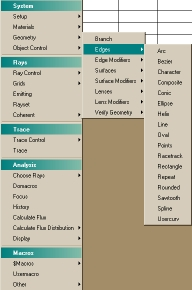

The Builder offers a simple approach to building your system. Designed for both new and experienced ASAP users, the Builder introduces you to the concepts of using ASAP to create your geometry, including sources. The entire system’s geometry is created in one window, using most standard spreadsheet navigation features, and saved with the file extension, .enx (an XML file), or .enz (a compressed XML file). You can also use the Builder for tracing rays and analyzing your system.
The ASAP Primer is an excellent resource for learning about the Builder in more detail. Key features are listed below.
Features
The following sampling of features gives you an idea of what you can do in the Builder:
-
Built-in ASAP command structure. All the ASAP commands are available in the Builder. The commands are accessible from an multi-layered, pop-up menu by double-clicking any cell in the Type column.

Since you enter Builder input in a sequence that mimics the ASAP command structure, you are actually learning about this command structure in a more user-supported environment. ASAP automatically translates your input into correct syntax, so that entry errors are far less common and easier to identify.
- "Tear Off" command menus. The pop-up menus are divided into submenus by command structure. For ease of use, you can detach (or "tear off") a submenu and either dock it to an edge of the Builder window, or float it anywhere on the window. Right-click a submenu title, such as System and select Dock or Floating.
- Debug toolbar. The Builder Debug Toolbar facilitates running from and to cursor, stepping through the file, and running to a breakpoint.
- View pictures of the geometry. Before selecting geometry from the Builder pop-up menu, you can preview a thumb-nail picture of each edge, lens, surface, emitter, and grid command. Select a command on the System > Geometry pop-up menu to view the picture. This visual feature saves you time in determining which edge, lens, or surface to select. You can turn on or off the menu pictures on the Builder tab of the User Interface Preferences dialog box (File > Preferences).
- Delineate code. The BlockStart and BlockEnd commands at the bottom of the Builder popup menu insert curly braces to delineate blocks of code.
- Preview. Test your geometry (single or multiple items) via the preview capability in the Builder. Your geometry is displayed in the 3D Viewer.
- Exploded lenses. Click
 on the Builder toolbar to view all the
component surfaces of a lens in the Builder. These surfaces are normally hidden
until exploded.
on the Builder toolbar to view all the
component surfaces of a lens in the Builder. These surfaces are normally hidden
until exploded. - Copy and paste. If you need to duplicate information either within the same Builder *.enx file or another *.enx file, use Cut and Paste to save time and reduce errors.
- Line status. Designate specific rows to include or exclude in your run to experiment with results.
- Find commands. Quickly find any ASAP command by clicking
 on the Builder
toolbar. A command tree highlights the command location. Double-click the
command to insert it in the Builder.
on the Builder
toolbar. A command tree highlights the command location. Double-click the
command to insert it in the Builder. - Tolerancing analysis. The Builder allows for the following tolerancing capabilities in ASAP, and new features will be added in subsequent releases: spreadsheet entry of tolerances and automatic Monte Carlo system perturbations.
- XML file format. Save Builder files in XML file format, compressed or decompressed.
- Mini Builder. Take advantage of the quick scripting of the Builder when you are working in the ASAP Editor window.
-
Macro Builder. Create user-defined macros from within the Builder. These macros may be used to run tasks that you perform repeatedly in ASAP, or to automate a series of complex tasks.
Access the Macro Builder by selecting Macros on the Builder menu or by clicking
 on the Builder toolbar.
on the Builder toolbar. - Customizing the toolbar. You can add or remove buttons on the toolbar of the Builder window. Right-click in an empty area of the Builder toolbar to open the dialog box, Customize Toolbar.
- Quick Start toolbar. Drag and drop glasses, scatter and roughness models and lenses onto the Builder.
- Optical properties must be inserted directly below each object definition.
- The Builder has no limitation on the number of rows.